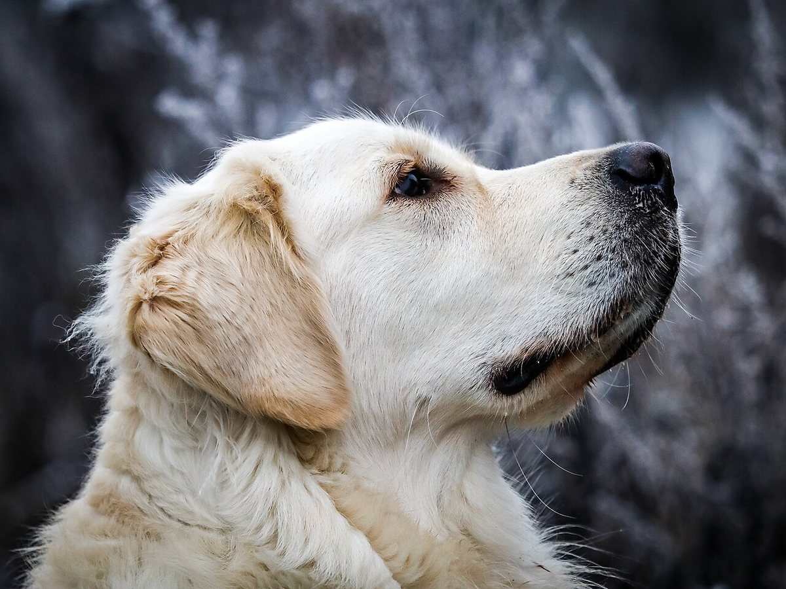
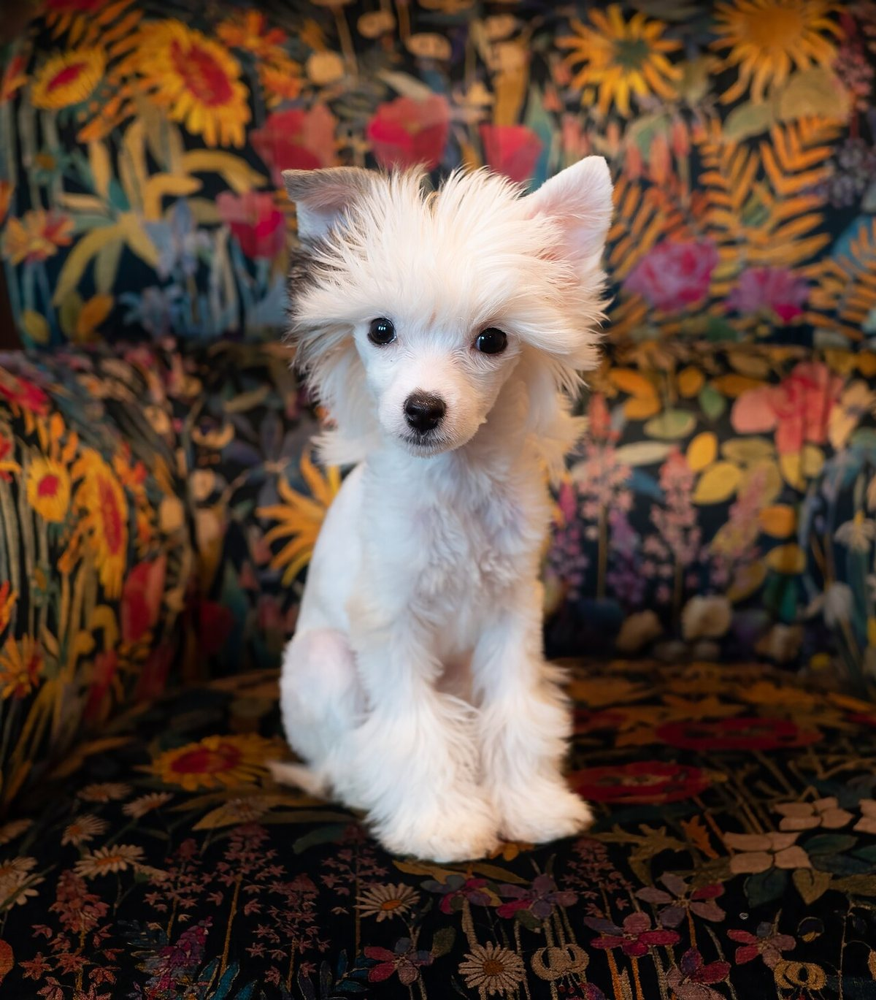
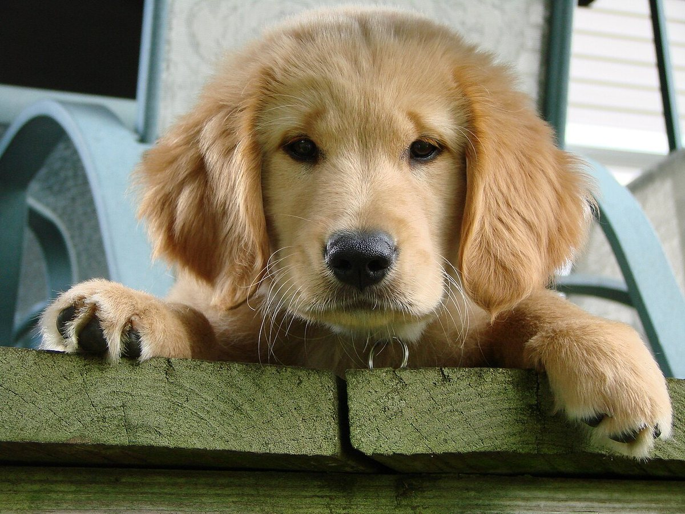
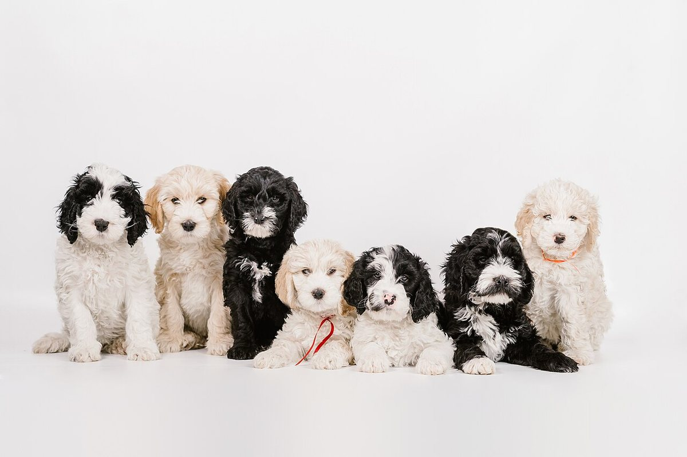
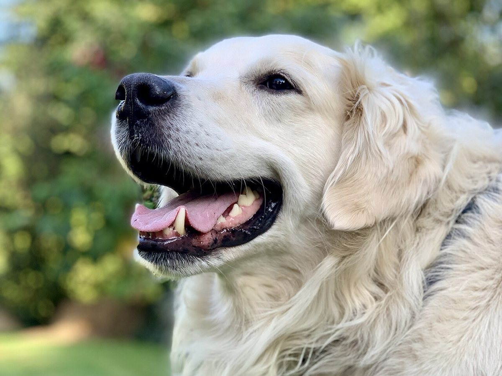
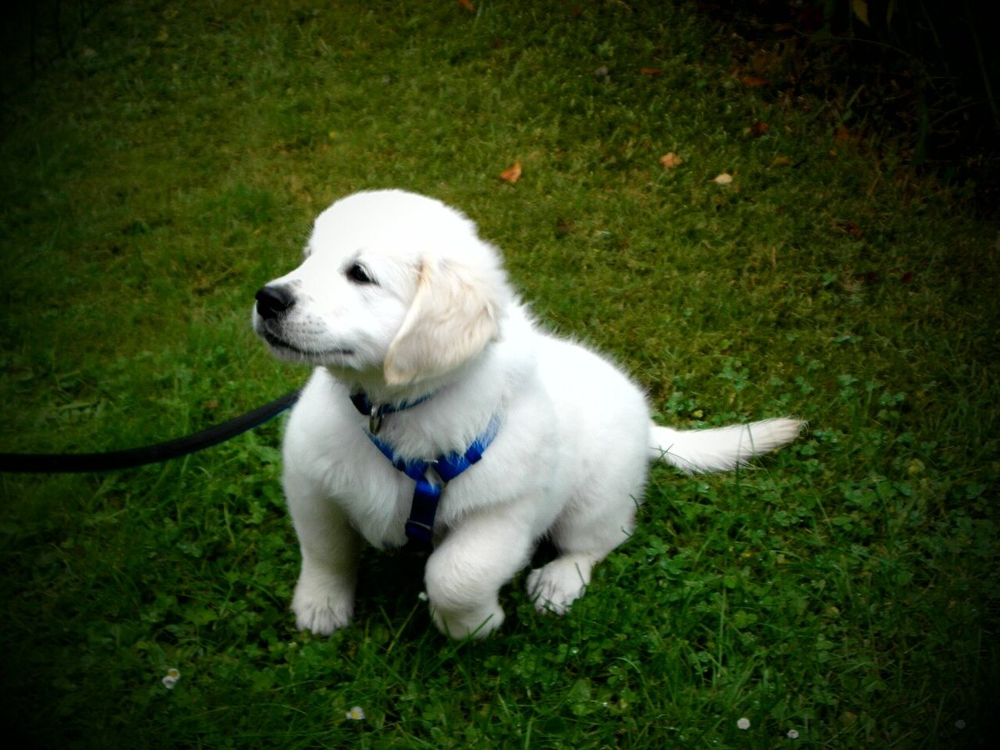

01
お手入れのご相談を、ここから
dog salon kopa_nは、大阪府豊中市西泉丘にあるドッグサロンです。
メニュー、料金、営業時間などの詳しい内容は、現在準備中です。ご利用を考えている方は、お電話かInstagramからお気軽にお問い合わせください。
豊中市西泉丘の、ドッグサロン
愛犬のお手入れについて、まずはお気軽にご相談ください。


dog salon kopa_nは、大阪府豊中市西泉丘にあるドッグサロンです。
メニュー、料金、営業時間などの詳しい内容は、現在準備中です。ご利用を考えている方は、お電話かInstagramからお気軽にお問い合わせください。
このページは、お店の公式サイトができあがったときのイメージをお見せするための試作サンプルです。掲載している写真は、すべてフリー素材のイメージです。
色づかいは、苔むした庭を思わせる深い緑と墨色。これは制作側の案で、実際のお店の雰囲気とは関係ありません。

写真のイメージ



ご予約・ご相談は、お電話かInstagramで。
営業時間・定休日は準備中(お問い合わせください)。このサイトに問い合わせフォームはありません。
このページの写真はフリー素材のイメージです。店舗の実際の様子・スタッフ・ペットではありません。他の地域で撮影されたもの、撮影地が不明のものを含みます。